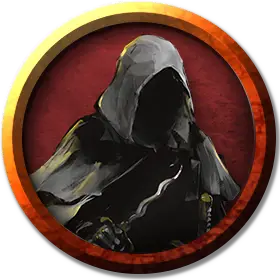

Ночной клинок
Night Blade
Средний Гуманоид (Человек), хаотично-злой

Класс Доспеха 12
Хиты 11 (2к8 + 2)
Скорость 40 футов
| мод | спас | ||
|---|---|---|---|
| СИЛ | 11 | +0 | +0 |
| ЛОВ | 15 | +2 | +2 |
| ТЕЛ | 12 | +1 | +1 |
| мод | спас | ||
|---|---|---|---|
| ИНТ | 10 | +0 | +0 |
| МДР | 11 | +0 | +0 |
| ХАР | 14 | +2 | +2 |
Навыки Запугивание +4, Скрытность +6
Чувства тёмное зрение 60 футов, пассивное Восприятие 10
Языки Общий
Опасность 1/4 (50 опыта)
Бонус мастерства +2
Особенности
Аура убийства. Пока ночной клинок дееспособен, враждебные существа в пределах 5 футов от него получают уязвимость к колющему урону, если только у них нет сопротивления или иммунитета к этому типу урона.
Действия
Кинжал. . Рукопашная или Дальнобойная атака оружием: +4 к попаданию, досягаемость 5 футов или дистанция 20 / 60 футов, одна цель. Попадание: 4 (1к4+2) колющего урона.
Описание
Баал — бог убийств, дарующий свою мощь тем, чьи убийства вызывают страх и ужас. Но само убийство — лишь половина желаемого. Вторая — подозрения, недоверие и паника, которые способен вызвать поистине неуловимый убийца. Баал жаждет внушать ужас, убивая тех, кто казался недосягаемым для смерти.
Баал всегда носит при себе алый платок. Он способен принимать разные облики, непохожие на его истинный — облик громилы с длинным изогнутым кинжалом, с которого капает кровь. В этой форме он одет лишь в драную набедренную повязку, лишён волос и покрыт кровоточащими ранами от острых лезвий. Его лицо —череп, лишённый плоти и окружённый нимбом из капель крови.
Баал — жестокий садист, обожающий убивать жуткими способами. Его способны сдержать только Бейн и Миркул вместе.
Подражая своему богу, культисты Баала совершают жестокие убийства, чтобы распространять ужас и панику. Они могут быть обезоруживающе милы, когда нужно, но в бою выходят на свет их истинные кровожадные натуры.
Кровопускание. Все культисты Баала умеют призывать мощь своего бога, чтобы сделать жертв уязвимыми для их длинных ножей. Когда магия Баала срабатывает, колотые раны извергают жуткие фонтаны крови. Царапины, казавшиеся мелкими, проникают вглубь тела жертвы и вызывают жуткую боль и кровотечение.
Убийцы из тени. Последователи Баала — коварные убийцы, обожающие сеять страх и ужас в тех городах, где живут. Они призывают мощь своего бога, чтобы легко скрываться в тенях, а то и становиться невидимыми, когда это важно.
Иерархия культа. Низшие в иерархии культа Баала зовутся ночными клинками, их Баал наделяет ночным зрением и мастерством скрытности. Следующие над ними — жнецы. Они получают способность к невидимости и с помощью магии Баала могут избегать подозрений. Высшее звание — главы смерти, они могут принимать облик своего бога с черепом вместо лица, чтобы пугать жертв. В бою они внушают врагам ужас, легко выдерживая смертоносные удары и давая понять, что сопротивление планам Баала бесполезно.